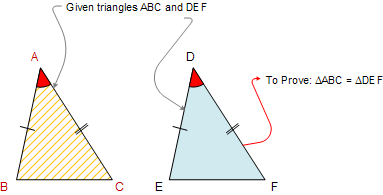
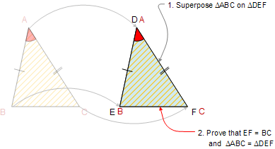

Proposizione I.4
Proposition I.4 is the familiar side-angle-side (SAS) criterion for triangle congruence. (While we use SAS and other modern names for certain propositions, we note that in The Elements, no proposition has a name.) The word base is used in the Heath edition to indicate the third side of a triangle when the other two sides are under consideration.
The statement of Prop. I.4 is the first place the word subtend appears in Heath’s edition of Euclid. “Subtend” means to stretch under and dates from the late sixteenth century. Curiously, the word hypotenuse has the same meaning and dates from just a bit later in the sixteenth century. As hypotenuse does not appear at all in the Heath edition, we must conclude that Euclid did not have a special term for the side of a triangle that subtends a right angle. Rather than say that a side subtends a particular angle, we would more likely say that a side is opposite the angle.
Proposition I.4. (SAS). Suppose two triangles have pairs of corresponding sides congruent, and the angles between them also congruent. Then the bases of the triangles are congruent, the regions enclosed by the triangles are the same size, and the angles subtended by congruent sides are themselves congruent.
 Proof. Let ΔABC and ΔDEF be triangles with AB ≌ DE, AC ≌ DF and ∠BAC ≌ ∠EDF. If ΔABC is positioned atop ΔDEF so that A is placed on the point D and AB placed on DE, then the point B must coincide with E because AB ≌ DE. AB coinciding with DE means the segment AC must coincide with DF because ∠BAC ≌ ∠EDF. The point C must coincide with the point F because AC ≌ DF. Since B coincides with E, the base BC must coincide with EF. [If not, then the segments BC and EF enclose a space, which is impossible.] We conclude that BC ≌ EF, that the triangles enclose regions that coincide and are thus of equal size, and that the remaining angles of ΔABC coincide with the remaining angles of ΔDEF so that ∠ABC ≌ ∠DEF and ∠ACB ≌ ∠DFE.□